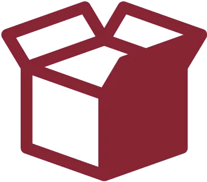
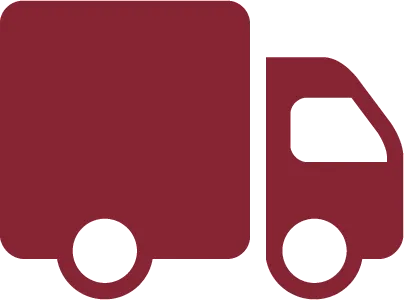
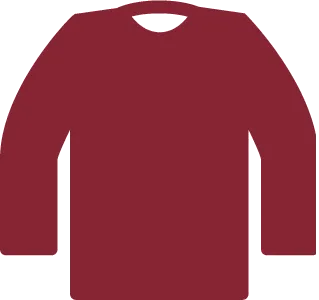
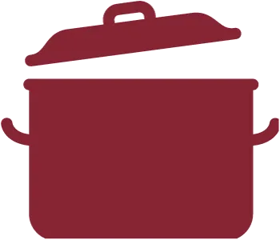
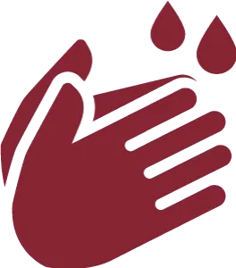
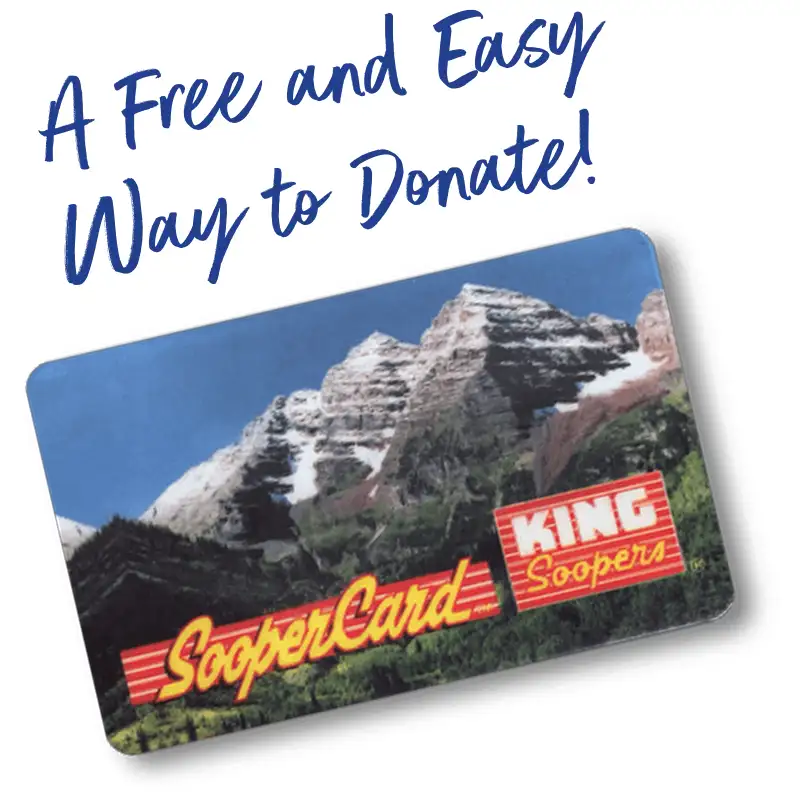

Drop Off DonationsWays To Give
Give Clothes, Food, and More

Request a Pick Up(Furniture and large items only)
Why Donate Clothes, Food and other items to Denver Rescue Mission?
Every item you donate—whether it’s clothing, shoes, non-perishable food, or even cars and trucks—plays a crucial role in providing hope and resources to individuals experiencing homelessness in our community. By donating gently used clothes and household items, you can make a meaningful impact in someone’s life. Donations to our food pantry and clothing services not only provide immediate relief but also help prevent homelessness by offering vital resources to families and individuals on the brink of losing stable housing.
Together, we are ending homelessness, one life at a time.
How Your Donations are Used
Your donations go beyond meeting material needs—they provide meals for individuals facing food insecurity, clothing for men and families in our long-term programs, household items for those working to establish stable housing, vehicles for program graduates, and much more. Every contribution you make helps us bring hope and resources to neighbors in need.
We primarily serve families and individuals transitioning into smaller apartments. To meet their needs effectively, we prioritize space-efficient and essential items that enhance their living spaces. For their benefit, we cannot accept items with rips, stains, discoloration, pet hair, structural damage, or those requiring repairs.
We prioritize donations such as:
- Dressers
- Coffee tables
- Couches and loveseats
- Living room chairs
- Small kitchen tables and chairs
- Small kitchen appliances and dishware
- End tables
- Small bookshelves
- Like-new Queen, Double, and Twin mattresses
- King sized not accepted due to size.
- Nightstands
- Lamps
- Clothing and footwear for adults and children
- Especially professional wear and winter items
- Non-perishable food items for our pantry services
- Hygiene items like soap, toothpaste, and deodorant
All this adds up to provide amazing life change for people in need.
Request a Pick Up
Thank you for your interest in donating items to the Mission. Due to the generosity of people in our city, our furniture pick up requests are currently booked in advance for the next month. Please continue if you are still interested in submitting a pick-up request for a later date.
I UnderstandFormstack Form Here
Need further assistance? Call 303.331.2931.
What Do You Want To Donate?
We accept non-perishable food items to-date, unopened, with no major damage to packaging.
We accept men’s, women’s, and children’s seasonal clothing. Underwear is accepted in unopened packages.
Donated furniture fills our residential facility, families in the community, partner agencies, and graduates from our programs who are moving into sustainable housing. The homes are generally small, furniture appropriate for the size of dorm rooms or studio apartments is preferable.
Small sets of dishes, pots and pans, simple decorations, pictures and frames, and many other items help furnish new homes.
Unopened individual toiletries benefit our numerous shelters and needy families in the community.
We accept vehicles of all ages and shapes! We have a team of mechanics who evaluate each donated vehicle and put them to the best use.
Learn MoreNon-perishable Food
We accept non-perishable food items to-date, unopened, with no major damage to packaging.

Clothing
We accept men’s, women’s, and children’s seasonal clothing. Underwear is accepted in unopened packages.
Furniture
Donated furniture fills our residential facility, families in the community, partner agencies, and graduates from our programs who are moving into sustainable housing. The homes are generally small, furniture appropriate for the size of dorm rooms or studio apartments is preferable.

Household Items
Small sets of dishes, pots and pans, simple decorations, pictures and frames, and many other items help furnish new homes.

Hygiene Items
Unopened individual toiletries benefit our numerous shelters and needy families in the community.
Vehicles
We accept vehicles of all ages and shapes! We have a team of mechanics who evaluate each donated vehicle and put them to the best use.
Learn MoreReady to Drop Off Today?
Thank you for considering donating items to Denver Rescue Mission. Before you bring in your items to donate, please check and make sure your item is something we can accept. While we appreciate every donation, there are some items we simply cannot accept.
Before You Donate, Please Note:
We Do Not Accept the Following Items
- Furniture that is damaged, dirty, stained, or covered in pet hair
- Furniture with glass in it
- Tube or rear projection TVs or monitors
- Armoires
- Outdoor furniture and equipment
- Dining tables over 6 feet
- King sized mattresses, box springs, and bed frames
- Sofa beds, pull-out couches, and sleeper beds
- Bunk beds
- Platform beds (Beds that don’t require a box spring)
- Exercise equipment
- China cabinets
- Large entertainment centers
- Bookshelves wider than 3 feet and taller than 5 feet
- Wrap-around desks
- Building materials and paint
- Large appliances
- Open cleaning supplies
- Flammable or corrosive chemicals
- Used stuffed animals
- Baby cribs or car seats
- All Medical Equipment except for like-new walkers, wheelchairs, and crutches
- Any and all medications
- Pianos
- Ping-pong and pool tables
- Commercial size printers and copiers
Drop Off Donations at Our Ministry Outreach Center
Our Ministry Outreach Center offers quick drive-up doors and staff assistance during regular business hours.
Monday – Friday
8:30 a.m. to 4:00 p.m.
The MOC is closed on weekends, many major holidays, and sometimes due to inclement weather. We recommend you call 303.297.1815 if you need to confirm if the MOC is open.
Get DirectionsCheck if your donation can be accepted before you arrive.
After-Hours Donation Drop-Offs
We encourage donors to bring items to our Ministry Outreach Center whenever possible. However, if needed, donations may be dropped off at The Crossing weekdays from 8:00 a.m. to 6:00 p.m., or our downtown Lawrence Street Community Center from 8:00 a.m. to 6:00 p.m. any day. Arriving after 6:00 p.m.? You’ll be provided with a map and instructions for dropping off your donations at our Ministry Outreach Center during normal business hours.
Please Note: Larger items such as furniture cannot be accepted at The Crossing or our downtown facilities. You can drop-off furniture at the Ministry Outreach Center, or you can request a free pickup for furniture or large items. All locations are unavailable to accept donations on major holidays.
While we appreciate every donation, there are some items we simply cannot accept.
- Furniture that is damaged, dirty, stained, or covered in pet hair
- Furniture with glass in it
- Tube or rear projection TVs or monitors
- Armoires
- Outdoor furniture and equipment
- Dining tables over 6 feet
- King sized mattresses, box springs, and bed frames
- Exercise equipment
- China cabinets
- Bookshelves wider than 3 feet and taller than 5 feet
- Wrap-around desks
- Bunk beds
- Building materials and paint
- Large appliances
- Open cleaning supplies
- Flammable or corrosive chemicals
- Used stuffed animals
- Baby cribs or car seats
- All Medical Equipment except for like-new walkers, wheelchairs, and crutches
- Any and all medications
- Pianos
- Ping-pong and pool tables
- Large entertainment centers
- Commercial size printers and copiers
Hosting a Drive?
If you are interested in conducting a drive to collect items,
please contact us to get started.
Shopping Online?
Here Are Some Unique Ways You Can Give While Shopping Online.
You can purchase items directly from our Amazon Wishlist and have them sent straight to us!
Purchase Items NowFundraising with King Soopers is easy. All you have to do is shop at King Soopers and swipe your Shopper’s Card.
Donate Through Your King Soopers Card

Link your King Sooper’s card today to help change lives with your shopping—at no added cost to you:
- Log in at KingSoopers.com (or create an account)
- Go to My Account/Community Rewards
- Search Denver Rescue Mission or JP422
- Every time you shop, King Soopers automatically donates to the Mission!